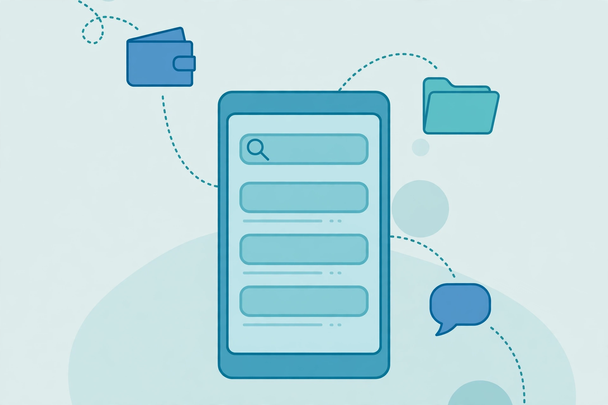

2026년 11월 24일

구글이 23일(현지 시간) 검색의 AI 모드에 '퍼스널 인텔리전스' 연결을 넓혔습니다. 이제 구글 월렛·드라이브·제미나이 앱까지 연결할 수 있습니다.
퍼스널 인텔리전스는 내 구글 앱 정보를 바탕으로 더 맞는 답을 주는 기능입니다. 지금까지는 지메일·캘린더·포토와 연결됐습니다.
월렛 연결은 지금부터 순차 적용되고, 드라이브와 제미나이 앱 연결은 몇 주 안에 열립니다. 답변 아래에 어떤 정보를 썼는지 보여주는 '개인화' 아이콘도 곧 생깁니다.
연결은 선택입니다. 검색 설정의 개인화 메뉴에서 켜고 끌 수 있습니다. 다만 유럽과 영국에서는 아직 쓸 수 없습니다.
출처: 구글 공식 블로그 — Tailored Google Search with Personal Intelligence apps · 테크크런치 — Google Search's AI Mode can now tap into Drive and Wallet